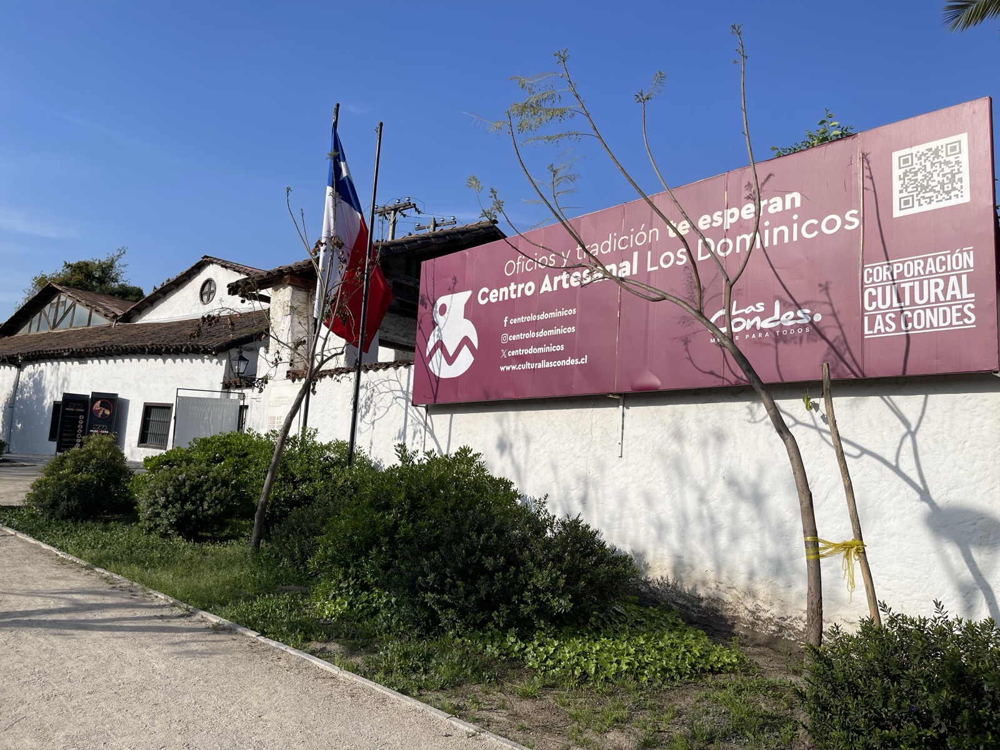

I went to Centro Artesanal Los Dominicos — the Los Dominicos Crafts Market in Santiago's Las Condes district. It's one of Chile's signature crafts markets, with work by local artisans on display, and it's loved by visitors and locals alike.
Los Dominicos Crafts Market

Once you step in, the wooden stalls line a series of paths filled with crafts: lapis lazuli jewelry, copper work, ceramics, textiles, leather goods... a concentrated slice of Chilean artisan culture. Most stalls sell at fixed prices — no haggling required.
Lapis lazuli is one of Chile's signature stones — most of the world's supply is said to come from here. Pieces using the deep-blue stone are everywhere in the market and remain a popular souvenir.
Capilla de Los Dominicos
Right next to the market stands a beautiful church with white walls and green copper domes — the Capilla de Los Dominicos. An 18th-century colonial-era chapel, still used as an active church today.

White walls, two towers topped with green-patinaed copper domes, a stone-paved plaza — every angle is photogenic. The unique thing about this place is that the crafts market and the church sit right next to each other; religion and craft coexisting in everyday life felt very Chilean.
I bought a single piece of lapis lazuli jewelry at the market, as a small memento of having made it to Chile.
Travel guide (general info)
※ This section combines public information with the author's notes; please confirm the latest entry, safety, and operating details on the official sites.
Getting to Los Dominicos and opening hours
- Located in Las Condes, eastern Santiago. The closest stop is "Los Dominicos" — the eastern terminus of metro Línea 1 — about a 5-minute walk away.
- Generally open 10:30–19:00 (varies by stall; some are closed on Mondays). Weekends draw locals.
- Most stalls use fixed prices, so haggling isn't expected. More shops accept cards now, but small-value purchases go more smoothly with cash.
Lapis lazuli and Chile's craft tradition
- Lapis lazuli is mined commercially in only two countries — Afghanistan and Chile. Chilean lapis comes mainly from the area near Ovalle in the north.
- It is Chile's official national stone (Piedra Nacional) and a popular souvenir. Genuine pieces show a deep ultramarine flecked with white calcite.
- Look also for Mapuche silverwork, Pomaire (Copiapó-area) ceramics, and Chiloé Island woollens — all distinctively Chilean crafts.
A note on the chapel next door
- The Capilla de Los Dominicos is a late-18th-century colonial chapel and a designated National Historic Monument (Monumento Histórico Nacional).
- It was built by Dominican friars — the source of both the chapel's and the market's name. It still functions as an active church, with Sunday Mass.
- The interior is free to visit. Bow at the entrance during services and keep photography discreet.